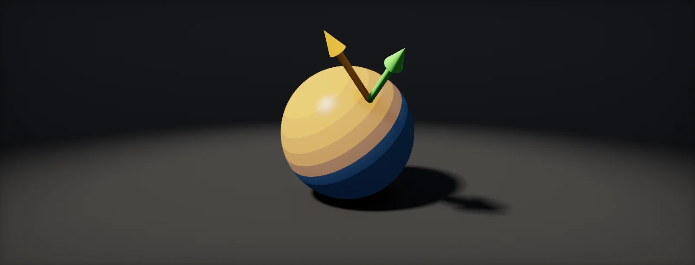

Dot and Cross Product
Two ways to combine vectors. The dot product measures how much two directions agree; the cross product builds a direction perpendicular to two others. Lighting, facing tests, reflections and normals all come from them.

The dot product: multiply and add
The takes two vectors and returns one number. The recipe is short: multiply the matching components, then add the results.
Drag the two arrows and watch the sign: positive while they point roughly the same way, zero when they are at a right angle, negative when they point apart. The next chapter explains why. In HLSL it is dot(a, b), in Shader Graph the Dot Product node.
What the number means: the angle
The same number can be computed a second way, from the two lengths and the angle θ between the arrows:
If both vectors are normalized (length 1), the lengths drop out and the dot product is the cosine of the angle: 1 when they point the same way, 0 at 90°, −1 when opposite. That one fact is behind most of the checks shaders make:
- Is a surface facing the light?
dot(N, L) > 0. - Is a point in front of the camera?
dot(toPoint, cameraForward) > 0. - How much does a surface face the viewer (rim light, Fresnel)?
1 − dot(N, V).
Projection: how far along a direction
When only b is normalized, dot(a, b̂) answers a different question: how far does a reach along the direction of b? Picture a light shining straight down onto b's line; the shadow of a has exactly this length.
This "how far along" reading is how a ray finds the point closest to a sphere's centre in Rays and Solving for t, and how height above a plane is measured: dot(p − pointOnPlane, planeNormal).
Lighting with one dot product
A surface receives the most light when it faces the light head-on, and less as it turns away, because the same beam spreads over a larger area. The amount is exactly the cosine of the angle between the surface N and the direction to the light L. With both normalized, that cosine is dot(N, L). Negative values mean the light is behind the surface, so they are cut to 0:
This is , the diffuse part of every lighting model in Unity and Unreal. The full equation multiplies it with the light's colour and intensity and the surface's albedo, part by part (colour times colour). Real-world light units are in Sun to Screen.
Reflections
A mirror flips the part of a direction that goes into the surface and keeps the part that runs along it. The part going into the surface is the projection of the direction onto the normal, dot(d, n)·n (previous chapters). Subtract it twice and you have the reflection:
HLSL has it built in as reflect(d, n); n must be normalized and d points towards the surface. Reflection probes, screen-space reflections and specular highlights all start from this vector.
The cross product: a perpendicular vector
The of two 3D vectors returns a third vector that is perpendicular to both. Its length equals the area of the parallelogram the two span, and its direction follows the handedness rule of the coordinate system.
The formula looks dense, but each part follows the same pattern. Set both z sliders to 0: the vectors then lie flat in the xy plane, only the z part of the result is non-zero, and that part, axby − aybx, is the edge function the rasterizer uses. Its sign says whether b is turned left or right from a.
The most common use: the normal of a triangle with corners a, b, c is normalize(cross(b − a, c − a)). Swap the order of the corners and the normal flips, which is why winding order decides which side of a triangle is the front. Tangent space builds its third axis the same way (tangent space).
Build it in Unity HDRP
Writing your own lighting is the classic use of the dot product: toon shading, stylised characters and debugging all start here. In HDRP, an Unlit graph does no lighting of its own, so you can compute it yourself from a light direction sent by C#. Written for Unity 6 with HDRP 17; Unity 2022 LTS works the same apart from a few renamed menu entries.
- Create the graph: in the Project window, Create > Shader Graph > HDRP > Unlit Shader Graph. Open it and check the Graph Inspector > Graph Settings.
- Add Normal Vector (Space: World) and View Direction (Space: World, normalized) nodes.
- Add Vector 3 and Color properties with References
_SunDirectionand_SunColor, both with Exposed unticked (global). - Save
SimpleLighting.hlsl. In the graph, add a Custom Function node. Set Type toFile, Source toSimpleLighting.hlsland Name toSimpleLighting(without the_floatsuffix). Add the inputs Normal (Vector 3), ViewDir (Vector 3), LightDir (Vector 3), LightColor (Vector 3), Albedo (Vector 3), Wrap (Float), Bands (Float) and the outputs Color (Vector 3), NdotL (Float), in that order and with those types: they must match the function's parameters. - Connect Color to Base Color (Unlit outputs it unlit). Set Bands to 0 for smooth shading or 3 for a toon look.
- Add
SunToShader.csto your Directional Light. Rotate the light: the object follows, in edit mode as well.
#ifndef ATLAS_SIMPLE_LIGHTING_INCLUDED
#define ATLAS_SIMPLE_LIGHTING_INCLUDED
// LightDir points from the surface toward the light. All vectors in world space, normalized.
void SimpleLighting_float(float3 Normal, float3 ViewDir, float3 LightDir, float3 LightColor,
float3 Albedo, float Wrap, float Bands,
out float3 Color, out float NdotL)
{
float3 N = normalize(Normal);
float3 L = normalize(LightDir);
NdotL = dot(N, L); // the cosine of the angle
float diffuse = saturate((NdotL + Wrap) / (1.0 + Wrap)); // Wrap = 0: plain Lambert
if (Bands > 0.5) diffuse = floor(diffuse * Bands + 0.5) / Bands; // toon steps
float3 R = reflect(-L, N); // mirror the light around the normal
float spec = pow(saturate(dot(R, normalize(ViewDir))), 48.0);
float rim = pow(1.0 - saturate(dot(N, normalize(ViewDir))), 4.0);
float3 ambient = Albedo * 0.08;
Color = Albedo * LightColor * diffuse + LightColor * spec * 0.25 + rim * 0.15 + ambient;
}
#endifusing UnityEngine;
// Put on a Directional Light: sends the direction toward the light and its colour to all shaders.
[ExecuteAlways, RequireComponent(typeof(Light))]
public class SunToShader : MonoBehaviour
{
static readonly int DirId = Shader.PropertyToID("_SunDirection");
static readonly int ColorId = Shader.PropertyToID("_SunColor");
void Update()
{
var light = GetComponent<Light>();
Shader.SetGlobalVector(DirId, -transform.forward); // the light travels along forward; we want toward it
Color c = light.color.linear; // colours in shaders are linear
Shader.SetGlobalVector(ColorId, new Vector4(c.r, c.g, c.b, 1f));
}
}HDRP lights are in physical units (lux), far brighter than 1, which is why this script sends only the colour. To light an Unlit graph with HDRP's own lights and shadows, use a Lit graph instead; Unlit is for stylised shading where you want full control. Shader Graph also offers Dot Product, Cross Product, Reflection and Fresnel Effect nodes for the same operations.
URP can read its main light directly: in the Custom Function call GetMainLight() inside #ifndef SHADERGRAPH_PREVIEW (it returns direction, color and shadowAttenuation), so the C# script is optional.
Use an Unlit material with a Custom node, or the SkyAtmosphereLightDirection node for the sun direction. For real lights with a custom response, Unreal's usual route is a post-process or a custom shading model in the engine source.
Sources and further reading
The formulas and engine details in this unit come from these references. Engine documentation changes between versions.
- Video courseEssence of linear algebra3Blue1BrownThe dot and cross product chapters show the geometry behind the formulas.
- TutorialBasic LightingJoey de Vries · LearnOpenGLN · L diffuse lighting and reflect() for specular highlights, in code.
- DocsHLSL intrinsic functionsMicrosoftdot, cross, reflect and normalize as the GPU defines them.